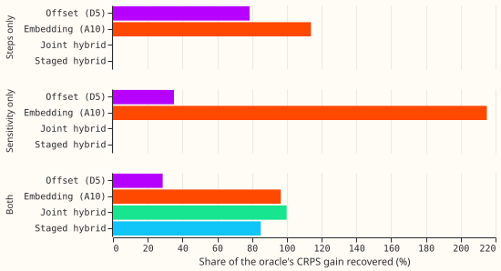

Does a slow output offset take level shifts while a drift embedding takes changes in behaviour? Known-answer synthetic worlds first, then the real data
We asked whether a slow output offset takes level shifts while a drift embedding takes changes in behaviour, using worlds where the answer is known. We injected a known component into the demand series of six Primary substations (three MVA, three MW), fitted the offset (D5), the embedding (A10), the joint hybrid, and a staged hybrid, and measured how much of the CRPS gain of an oracle (a network given the true component) each recovered. In the readable world the embedding recovered nearly all of it and the offset alone under a third, so the hypothesis is not supported. The results are interim and unaudited, from one fold (2025-12) and two seeds.

Results
- First worlds were unreadable. With steps of 3% to 6% of capacity and sensitivity up to 0.4%
per degree, the oracle gained 0.27 CRPS points over the drift-free base (2 folds, 2 seeds), and
the oracle was worse than frozen D5 (recovery above 100% for several arms; figures from the
Wcworld's two-fold summary, regenerated insummary_recovery.csvandsummary_absolute.csv). Recoveries above 100% and a negative oracle gap at the three MW Primaries of the sensitivity-only world show that the oracle is not a ceiling here. The seed spread of the base was 0.1 to 0.18. This world was dropped, as the pre-registered pass condition requires. - Worlds with tripled amplitudes (
-big), fold 2025-12, injected Primaries, 24-120 h. Oracle gain over the base: 2.76 points in the combined world (seed spread of the base about 0.7), 2.71 in the steps-only world (1 seed), 0.35 in the sensitivity-only world (0.75 at the three MVA Primaries and -0.06 at the three MW Primaries), so the sensitivity-only world is unreadable and its contrasts are dropped (the 0.35 gain is also too small for the combined world's gain to say anything about sensitivity: the steps alone gain 2.71). - Combined world (2 seeds), recovery of the oracle gain. A10 96.5%, joint hybrid 99.9%, staged hybrid 85.0%, D5 28.6%. At the three MVA Primaries D5 recovered -10.6% and at the three MW Primaries 53.6%. CRPS minus D5: A10 -1.87, joint hybrid -1.96, staged hybrid -1.55.
- Steps-only world (1 fold, 1 seed). D5 recovered 78.6% and A10 113.9%. The offset does take steps, but the embedding does too, so the prediction that the embedding recovers at most 40% fails in this one run.
- Untouched Primaries (combined world). CRPS of the ten untouched Primaries (including D15 and D18): base 5.61; A10 5.70, D5 5.59, joint hybrid 5.61, staged hybrid 5.46. Differences are within the seed spread; the neighbour-leak prediction was not tested against a minimum detectable effect, which was not computed.
- Predictions. S0 failed (step 0). W-level fails (A10 recovered more than 60% of the steps in one run). W-behaviour could not be tested (unreadable world). W-both: the joint hybrid recovered over 60%, but the selected construction does not beat the joint hybrid. W-compete fails: the joint hybrid did not recover less than the better single component. W0 and the real-data check were not run.
- Stop rule. No hybrid construction beat the joint hybrid's recovery in the combined world, so the real-data check was skipped. The film and orthogonal hybrids were fitted in the first combined world only (unreadable), where no ranking is possible.
What was not done
- The 2026-06 fold, the clean control W0, the evening-bump world, and the oracle-based seed-spread minimum detectable effect were not run: the first worlds consumed most of the budget (about 2.5 GPU-hours of the 4 GPU-hours ceiling) before larger amplitudes were requested.
- Component-level recoveries (offset path against the injected path, implied sensitivity against the injected sensitivity) were planned as read-outs and not computed, so the selection rule was not applied; the CRPS recovery is the only recovery reported.
- Caveats: one fold and two seeds (one seed for the single-component worlds) give no intervals; the free-encoder base and oracle are compared with frozen-encoder arms, which can lower the frozen arms' recovery; the oracle sees the realised temperature, which forecast-driven arms do not. NGED generator series are not plotted.
Lessons and next step
No amplitude between the unreadable and the tripled worlds was tried. Options for a next experiment are a sensitivity-only world with amplitudes that make it readable on several folds, and the film and orthogonal hybrids in a readable world.
Plan as written before any fit
Experiment 565 found that adding the drift embedding to the output offset removed the offset's gain. This experiment asks whether that failure came from the two components competing for the same slow variance, by (1) building worlds with a known injected answer, (2) building the hybrid four ways, and (3) checking the best construction on the real data.
Step 0 result (CPU and one GPU pass over experiment 565's stored hybrid fits)
The prediction S0 failed: the embedding and the offset do not compete through correlated level paths. Over the five fold months and seeds 0 and 1 (fits of day 14), the mean per-Primary correlation between the embedding's level path and the offset's level path is 0.09 at the eight MVA Primaries, 0.04 at the six MW Primaries, and 0.04 at D15 and D18 over all months, and 0.21, 0.15, and 0.67 over the last 12 months. The embedding carries 93% to 99% of the slow variance (embedding path variance 0.15 to 0.56 in standardised units squared, offset 0.006 to 0.007). So the joint hybrid is dominated by the embedding. Low correlation with a dominant embedding is a winner-take-all form of competition, so step 0 neither supports nor refutes the hypothesis. As the brief states, the correlation criterion failed, so the staged and orthogonal constructions are less certain to help.
Design
- Worlds (real ERA5 weather and real Primary series; injection into the cleaned power over capacity, so training, pre-training, and scoring actuals all carry it). Injected Primaries: 6 (3 MW, 3 MVA) with the fewest labelled events, not D8 or D14. Wa: 3 abrupt steps per Primary (3% to 6% of effective capacity, random sign, at least 60 days apart, one in the 15 months before a fold's start and one 20 to 40 days before it, none in a scored month); Wa-in has one step inside the scored month (report-only). Wb1: extra load of s(t) times the heating degrees below 15 degrees Celsius, s rising linearly from 0 (2023-01) to 0.4% of capacity per degree (2025-06), then constant. Wb2 (reference arms only): an evening bump, 17:00 to 21:00 local, amplitude rising from 0 to 3% of capacity. Wc: Wa and Wb1 together. W0: no injection. Folds: 2025-12 and 2026-06 for the synthetic worlds, all five for the real data.
- Arms on the lag-free base: D5, A10, H-joint (565's hybrid), H-staged (offset fitted first and frozen, then the embedding and mixer fitted), H-film (the embedding is a per-channel scale of 1 plus delta on the weather encoder's output, dimension 3, strong L2 shrinkage, no additive path, offset fitted jointly), H-orth (H-film plus a penalty that makes the embedding's mean effect on the mixture location zero within every Primary and month, and a penalty on the squared covariance of the two level paths; covariance rather than correlation because the first penalty drives the embedding's level path towards zero, where a correlation is unstable). H-staged-S (the abrupt-step offsets of addendum 24) is not run: its known-answer test has not yet been run.
- Oracle: the base network given the true injected component, standardised by the Primary's target standard deviation, as one extra input to the mixer in pre-training and fine-tuning.
- Recovery = (CRPS of the base without drift minus the arm's) / (the base's minus the oracle's) on the injected Primaries at 24-120 h, per fold. Seeds: 2 for Wc and the real data, 1 for Wa, Wb1, W0.
- Timing asserts (row by row, one printed example per arm): the weather comes from the ensemble run at or before the origin minus 9 h (the harness assertions of experiments 510 and 565); the base has no lag column; the injected truth enters only the target and, in the oracle only, the oracle input.
- Standing practices followed: cleaned data everywhere, D15/D18 cut, saved fitted models, stored predictions reused (565's D5, A10, and H on the real data), coarse refits (days 0 and 14). Departed from: none. Earlier advice followed: carry slow change as an offset (565); the A10 embedding added to D5 lost the gain (565), which this experiment tests rather than repeats.
Choices fixed after the plan review, before any fit
- Component recoveries in Wc (needed by the selection rule; planned and never computed) are read-outs, not CRPS: step recovery is the R-squared of the arm's total monthly level path (offset plus the embedding's level path) against the injected step path over the 24 months before the fold; sensitivity recovery is the R-squared of the implied sensitivity (slope of the mixture- location change against heating degrees, newest embedding knot against the 2023-01 knot) against s(t). The oracle-based CRPS recovery is the pooled measure, reported beside them.
- Oracle ceiling: in Wb1 and Wc the oracle is given the realised-temperature component, which no forecast-driven arm sees, so 100% recovery is not reachable and the W-both threshold is read with that in mind.
- Frozen versus free encoders: the base (M0w) and oracle fine-tune free encoders; D5, A10 and the hybrids freeze them, as in experiment 565. Recovery is measured against the free base, so a frozen arm can show lower recovery partly because of the freezing.
- H-film is not strictly level-free: the scale change of a GELU output can move the mixture location. Its level path is reported as a read-out; only H-orth penalises it. H-orth's penalty is measured on 64 fixed probe rows per Primary pooled over months, not per month, and in fine-tuning acts on the one trainable knot, so it is weak there.
- Staged hybrid: the encoders copied from D5 stay trainable in staged pre-training while the offset knots are frozen.
- Seeds and intervals: Wa-in and Wb2 use 1 seed; synthetic results use 2 folds, so they are reported as per-fold values with the minimum detectable effect from the W0 seed spread, not as intervals. W0 is reported as CRPS differences only. The offset has monthly knots, so step dates are resolved to a month, not 3 days.
- Timing asserts are the harness asserts of experiment 565 (summary file of the run exists at or before the origin minus the publication delay; nwp_init_time <= power_fcst_init_time on every test row). No slow summary input exists, so the end-time assert has nothing to check.
Cost and stop rules
Ceiling 4 GPU-hours (unmeasured guess in the brief: oracles 0.4, synthetic cells 2.2, real-data check 1.2). The first cell's cost is measured and the total projected; the manager is told before 4 GPU-h is exceeded. If no hybrid beats H-joint's minimum recovery in Wc, the real-data check is skipped.